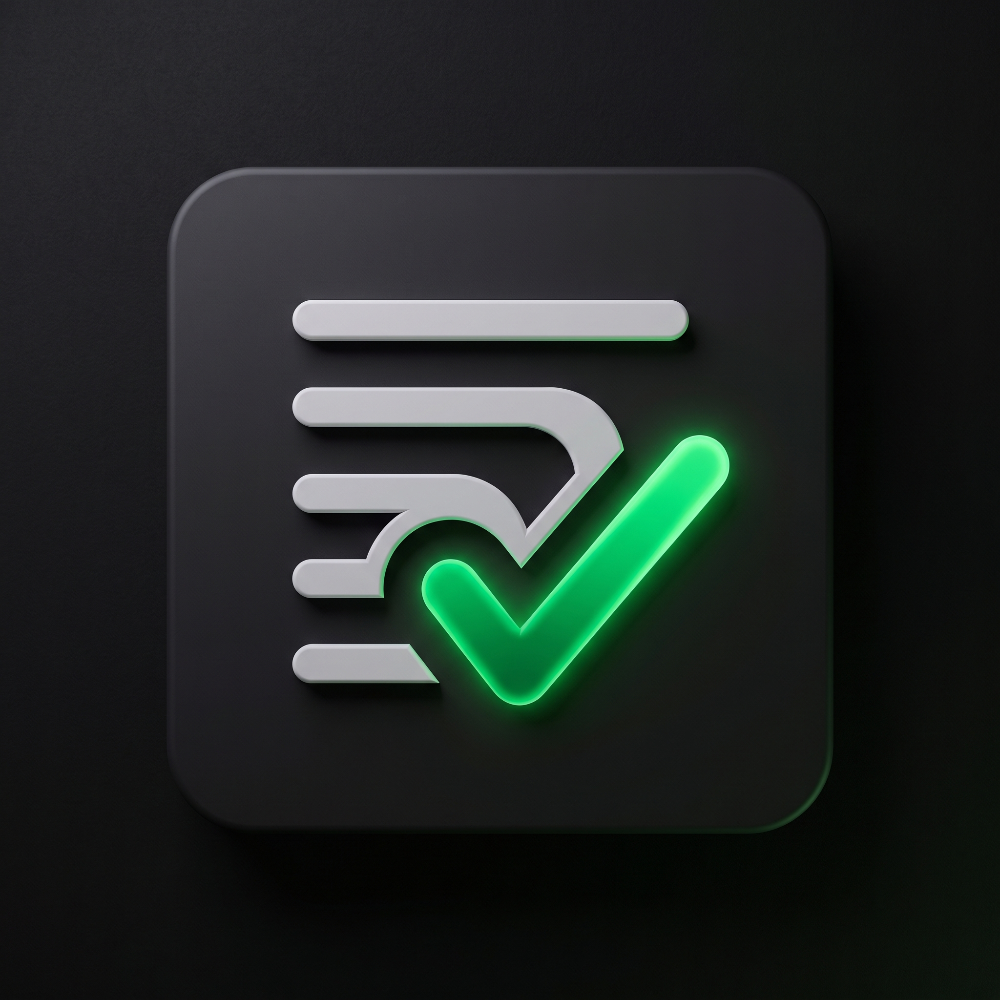

Check
Listy
Seu conteúdo, em ordem.
+
Playlist
Todos
Assistindo
Não Iniciados
Concluídos
Adicionar Nova Playlist
Cole o link completo da playlist ou canal do YouTube:
Cancelar
Adicionar
Suas Coleções
← Voltar para coleções
Carregando episódios...